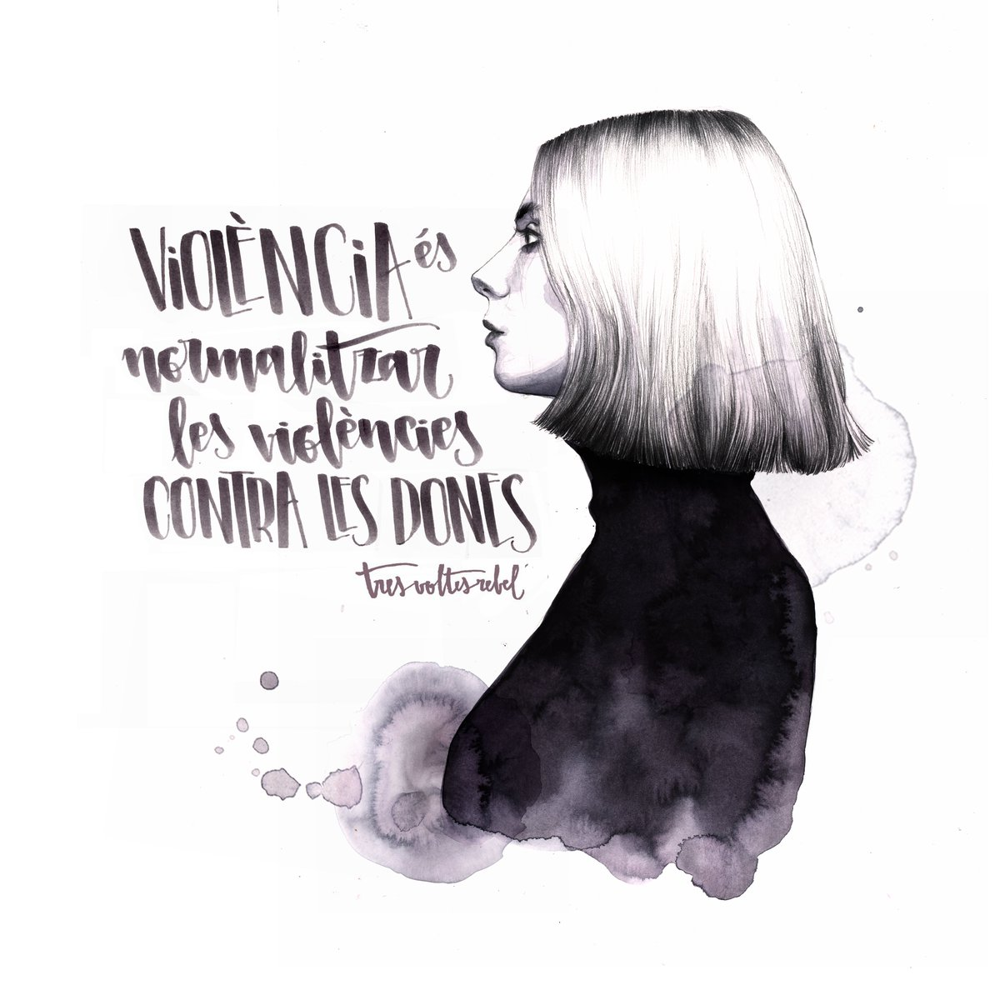
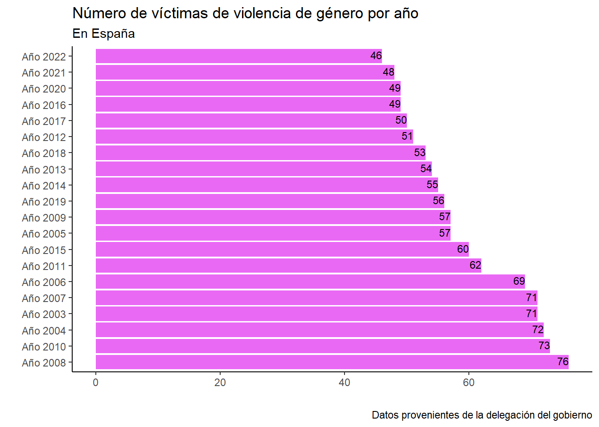
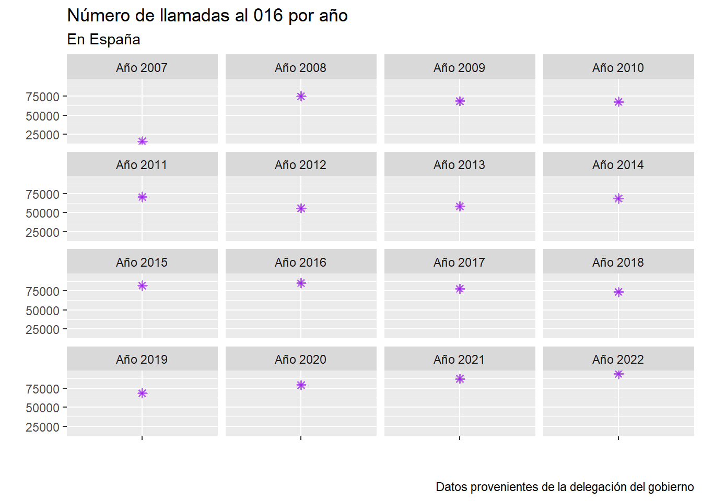
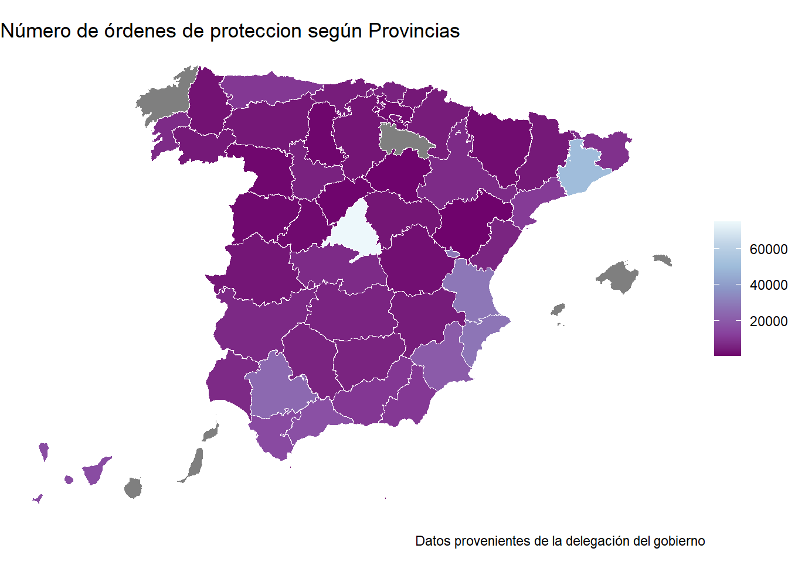
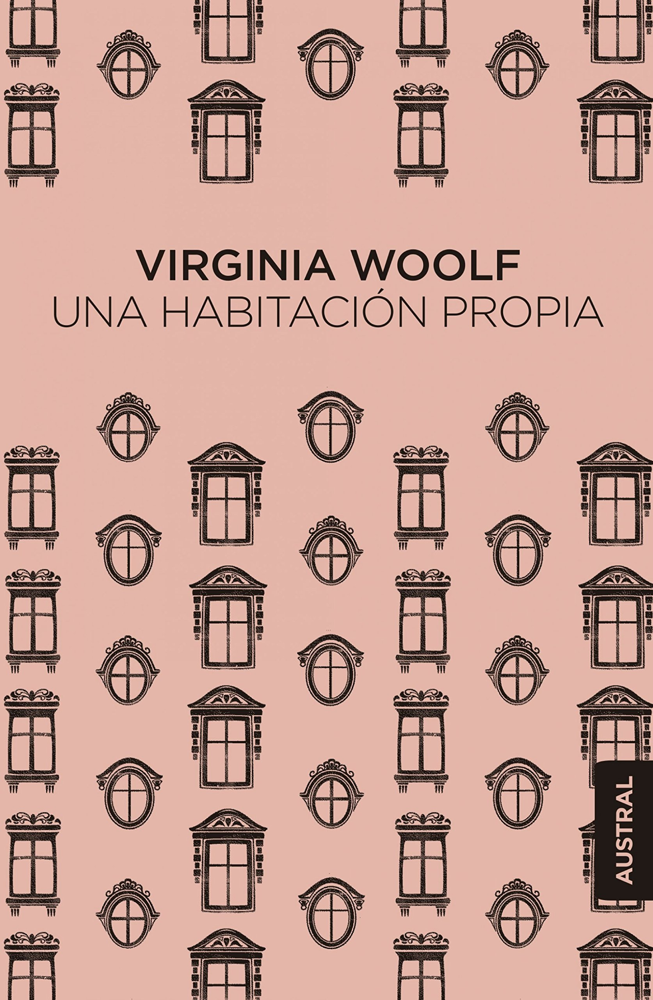
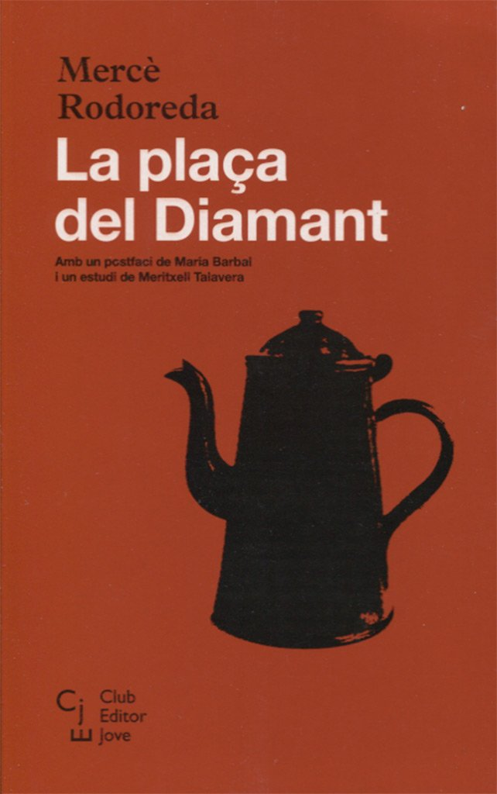

Introducción
A pesar de que mucha gente opine que la violencia contra las mujeres a día de hoy no existe o que son una exageración muchas de las cosas que argumenta el feminismo, lo cierto es que aún sigue habiendo un grabe problema es nuestra sociedad acerca del papel de las mujeres. El problema radica principalmente en la educación, desde niñas no han enseñado qué cosas hay que hacer, decir o no y a ser las únicas culpables de lo que nos puede pasar: “ten cuidado, no vuelvas tú sola”, “no vayas así vestida a ver si te pasa algo”, “no salgas sola de noche”. Se nos pone en el punto de mira y, sin embargo, no se le dice nada a la parte contraria, no le suelen decir a ningún niño cómo debe ir vestido, el cuidado que tiene o no que tener de noche o que tenga que avisar cuando llegue a casa. Evidentemente siempre está la preocupación de que a tu hijo/hija le pueda pasar algo, pero no son los mismos comentarios a los diferentes sexos. Esto mismo pasa en muchos de los juicios de violencia de género. Hemos vivido algunos casos en los que el propio fiscal ha preguntado cómo iba vestida la víctima en el momento de los hechos, cómo si por ir vestida de una forma u otra fuera relevante. Otro ejemplo de que hay un problema es que la mayoría de las personas han vivido, les han contado o han oído alguna experiencia machista, desde una amiga que le han dicho algún comentario incómodo por la calle, una familiar que ha sufrido algún tipo de violencia, o una compañera a la que le han hecho un chiste. En este caso me voy a centrar en la violencia de género para explicar lo mucho que nos queda avanzar como sociedad.
Datos
Para la realización del trabajo ha sido necesaria la obtención de información procedente de la Delegación del Gobierno contra la Violencia de Género.
Definiciones
Violencia de género (según el Ministerio de Igualdad): La violencia de género es aquella que se ejerce sobre las mujeres por parte de quienes estén o hayan estado ligados a ellas por relaciones de afectividad (parejas o ex-parejas). El objetivo del agresor es producir daño y conseguir el control sobre la mujer, por lo que se produce de manera continuada en el tiempo y sistemática en la forma, como parte de una misma estrategia.
Violencia vicaria: Forma de violencia por la que un progenitor ataca a una hija o un hijo con el objetivo de causar dolor a la madre. En el caso de la violencia vicaria, la violencia de género no solo tiene como víctima a la mujer, también, y principalmente, son víctimas sus hijas e hijos.
016: Es un servicio telefónico de información y de asesoramiento jurídico en materia de violencia de género. Se trata de un teléfono dirigido no sólo a las víctimas de este problema, sino a toda la sociedad en su conjunto. El 016 está coordinado por el Ministerio de Sanidad, Servicios Sociales e Igualdad, por medio de la Delegación del Gobierno para la Violencia de Género. No deja rastro en la factura y es gratuito.
Víctimas
Según año

Como se puede ver en el gráfico el año donde más víctimas mortales por violencia de género hubo en España fue en 2008 siendo un total de 76 mujeres y el menor ha sido justamente este año (2022) con 46 mujeres, si bien los datos han mejorado, 46 mujeres asesinadas es un número muy elevado y muy preocupante. Además desde que se contabilizaron los datos el número de víctimas mortales ha aumentado llegando a 49, tras un diciembre terrible. Hay que recalcar que no es una evolución puramente descendente ya que, por ejemplo, entre las víctimas de 2009 y 2019 hay 1 mujer de diferencia (57 en 2009 y 56 en 2019) a pesar de que hayan pasado 10 años entre ambas cifras.
Según provincias
Estos datos pertenecen al total de años que se han contabilizado, desde el inicio, 2003 hasta la actualidad 2022.
En la provincia donde más víctimas mortales por violencia de género hay es en Madrid con un total de 124, seguido de Barcelona con 115, Alicante con 67 y Valencia con 63. Por el contrario, donde menos víctimas han habido ha sido en Teruel y Zamora con un total de 2, Segovia y Soria con 3 y Palencia con 4. Sin embargo hay que tener en cuenta que esto también va relacionado con la población total en cada provincia, ya que a mayor población mayor el la probabilidad de que haya más víctimas entre el total.
016

| Número total de llamadas al 016 | ||
| España | ||
| Número de llamadas | ||
|---|---|---|
| Año 2007 | 15.715 | |
| Año 2008 | 74.951 | |
| Año 2009 | 68.541 | |
| Año 2010 | 67.696 | |
| Año 2011 | 70.679 | |
| Año 2012 | 55.810 | |
| Año 2013 | 58.274 | |
| Año 2014 | 68.651 | |
| Año 2015 | 81.992 | |
| Año 2016 | 85.318 | |
| Año 2017 | 77.796 | |
| Año 2018 | 73.454 | |
| Año 2019 | 68.714 | |
| Año 2020 | 79.201 | |
| Año 2021 | 87.307 | |
| Año 2022 | 93.924 | |
| Media | — | 70,501.44 |
Las llamadas al 016 son una señal clara de lo preocupante que es este problema debido a que suelen llamar mujeres que han sufrido algún tipo de violencia, ya sea verbal, física o psicológica, y que están verdaderamente preocupadas y/o asustadas sobretodo por su situación o por la de sus hijos (pues la violencia vicaria está muy relacionada con la de género) Uno de los principales problemas es que no hay suficientes funcionarios que se dediquen a llevar un seguimiento de estas llamadas o poder atenderlas con facilidad.
En cuanto a los datos, lo más sorprendente es que actualmente es cuando se ha alcanzado el récord de llamadas al 016, 93.924, seguido del 2021 con 87.307. Pensando en el lado positivo, esto puede ser debido a que muchas más se atreven a dar el paso y a contar la preocupación que tienen, pero eso también quiere decir que hay muchísimas mujeres que tienen algún tipo de temor, miedo o inquietud. La menor de las llamadas fue en 2007 teniendo en cuenta que fue el primer año en el que se creó esta línea, en agosto y aún así fueron 15.715 llamadas.
Denucias
| Número total de denuncias de violencia de género | ||
| España | ||
| Denuncias | ||
|---|---|---|
| Año 2009 | 135.539 | |
| Año 2010 | 134.105 | |
| Año 2011 | 134.002 | |
| Año 2012 | 128.477 | |
| Año 2013 | 124.893 | |
| Año 2014 | 126.742 | |
| Año 2015 | 129.193 | |
| Año 2016 | 143.535 | |
| Año 2017 | 166.260 | |
| Año 2018 | 166.961 | |
| Año 2019 | 168.168 | |
| Año 2020 | 150.804 | |
| Año 2021 | 162.848 | |
| Año 2022 | 87.508 | |
| Media | — | 139,931.07 |
En el año 2019 fue cuando se produjeron más denuncias, 168.168. Como se puede observar es un número muy elevado, pese a que algunas personas argumenten que hay denuncias falsas, cosa que por supuesto no se debería hacer, tan solo alrededor del 0,001% lo son. Esto lo único que provoca es que resta credibilidad a las que sí que son verdaderas (la inmensa mayoría). Pero precisamente por esto no hay que quitarle importancia a las que sí lo son. Es una auténtica barbaridad que haya tantas denuncias prácticamente tan solo hace 3 años. Si bien es cierto que el mínimo valor ha sido en 2022 siguen siendo 87.508 mujeres. Cabe destacar que la media de denuncias por año es de 139.931, lo que implica un número muy preocupante. El problema es que el denunciar no te ofrece ninguna garantía desgraciadamente, ya que muchas de esas denuncias o no llegan a tiempo o directamente no llegan a ser sentencias. Ello se debe a nuestro sistema judicial que es extremadamente lento dada la extensa burocracia y los retrasos que hay. A pesar de ello, hay que denunciar ya que si bien no siempre es efectivo es la única manera en la que se puede llegar a conseguir algo.
Órdenes de protección

| Número total de órdenes de protección | ||
| España | ||
| Provincia | Órdenes de protección | |
|---|---|---|
| Almería | 10.847 | |
| Cádiz | 15.635 | |
| Córdoba | 5.999 | |
| Granada | 10.501 | |
| Huelva | 7.397 | |
| Jaén | 6.005 | |
| Málaga | 17.269 | |
| Sevilla | 24.888 | |
| Huesca | 1.847 | |
| Teruel | 812 | |
| Zaragoza | 7.711 | |
| Asturias | 10.660 | |
| Illes Balears | 12.960 | |
| Las Palmas | 15.236 | |
| Santa Cruz de Tenerife | 16.199 | |
| Cantabria | 4.540 | |
| Ávila | 1.618 | |
| Burgos | 3.134 | |
| León | 3.763 | |
| Palencia | 1.191 | |
| Salamanca | 1.508 | |
| Segovia | 1.012 | |
| Soria | 985 | |
| Valladolid | 5.590 | |
| Zamora | 1.335 | |
| Albacete | 4.433 | |
| Ciudad Real | 6.103 | |
| Cuenca | 2.300 | |
| Guadalajara | 3.268 | |
| Toledo | 7.646 | |
| Barcelona | 51.219 | |
| Girona | 8.977 | |
| Lleida | 3.872 | |
| Tarragona | 11.393 | |
| Alicante/Alacant | 28.329 | |
| Castellón/Castelló | 6.265 | |
| Valencia/València | 28.993 | |
| Badajoz | 7.068 | |
| Cáceres | 3.346 | |
| A Coruña | 7.998 | |
| Lugo | 2.732 | |
| Ourense | 3.859 | |
| Pontevedra | 7.543 | |
| Madrid | 75.310 | |
| Murcia | 20.597 | |
| Navarra | 4.511 | |
| Araba/Álava | 1.773 | |
| Gipuzkoa | 3.748 | |
| Bizkaia | 5.741 | |
| La Rioja | 3.485 | |
| Ceuta | 1.302 | |
| Melilla | 582 | |
| Media | — | 9,635.29 |
Otro de los problemas es que no disponemos de medios suficientes, en este caso policías, para seguir estas órdenes y conseguir una protección verdaderamente eficaz. Si bien han aumentado los puestos de trabajo dedicados a esto, aún quedan bastantes situaciones que vigilar. En este caso el mayor número de órdenes de protección según provincias se dio en Madrid con más de 75.000, esto es lógico ya que es una de las provincias dónde más habitantes hay y es más probable que haya más que en el resto, cosa que también sucede por ejemplo con Barcelona (más de 50.000). El número más bajo, sin contar Ceuta y Melilla, se encuentra en Teruel con 812. Lo que quiere decir que hay una diferencia entre la provincia que más órdenes tiene y la que menos de 74.498. También se puede observar que el número de protecciones es mayor en el sureste de la península y, a exepción de Madrid, el resto presenta los valores más bajos. La media de órdenes por provincia es de 9.635, lo cual dista mucho de los valores de Madrid.
Conclusión
En conclusión podemos afirmar que efectivamente existe aún un grave problema de violencia de género en este país. Los datos lo demuestran ya que no debería ni haber una línea de teléfono específica para estos casos, tampoco debería haber órdenes de protección ni siquiera denuncias ni, por supuesto, víctimas. Es necesario, por lo tanto, que todos ayudemos a eliminar esto de la sociedad en la que vivimos, desde la educación a nuestros hijos, hijas, alumnos y alumnas, intentando eliminar conductas machistas hasta actuar y ayudar cuando seamos testigos de un caso de violencia. El papel del gobierno también debería cambiar y destinar más recursos a mitigar este tipo de situaciones. Por ejemplo, más psicólogos especializados, más funcionarios controlando las órdenes de protección, implantar leyes verdaderamente efectivas, etc.
Recomendaciones
Para terminar he decidido adjuntar dos videos que hablan de diferentes maneras de la violencia de género. El primer caso, el de una chica que cuenta su experiencia como víctima y, en segundo lugar, un recopilatorio de muchas de las canciones que hemos escuchado la mayoría de las generaciones actuales que si nos paramos a analizarlas tienen mensajes machistas y ni siquiera nos damos cuenta.
A continuación dejo recomendaciones de 3 libros de hablan un poco sobre la situacion de la mujer en diferentes ámbitos: “Una habitación Propia” de Virginia Woolf, “La plaça del Diamant” de Mercè Rodoreda y “Memorias de una salvaje” de Bebi Fernández (este último trata de un tema que no se suele ver como es el de la prostitución)

